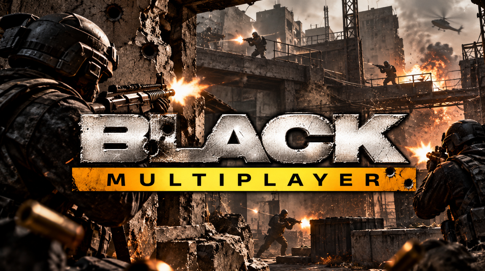
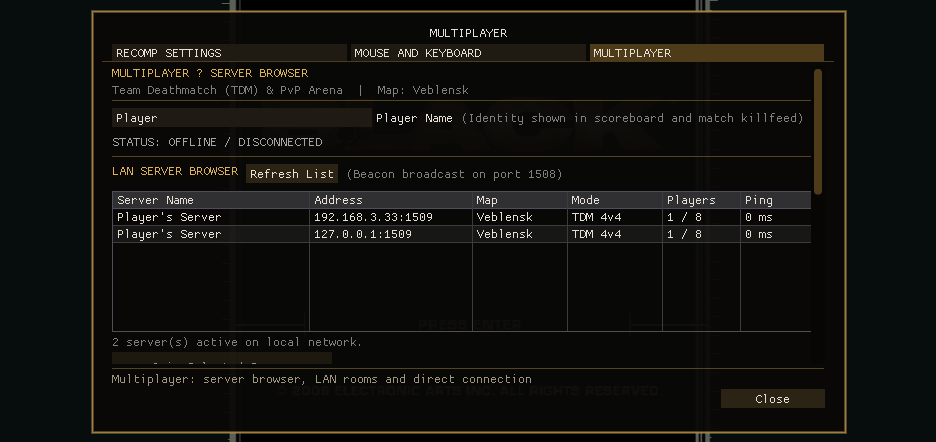
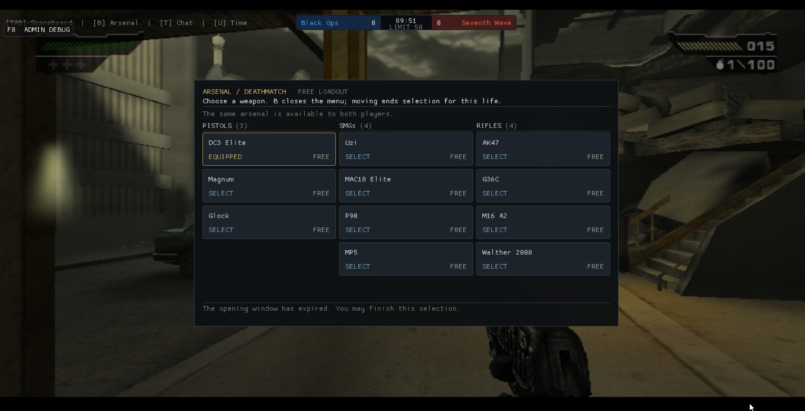
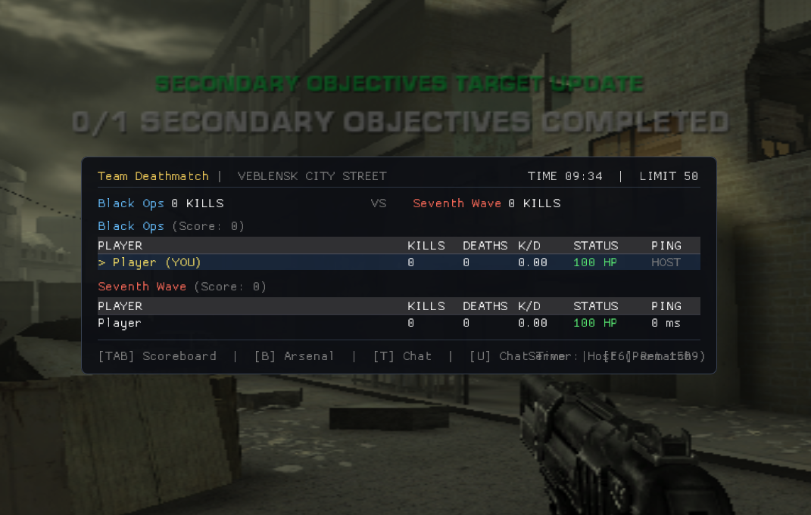

O clássico FPS da Criterion (2006) rodando nativamente no Windows com modo multiplayer online. Partidas Team Deathmatch (Black Ops vs. Seventh Wave) a 60+ FPS com suporte a teclado e mouse.
Conecte-se aos servidores dedicados oficiais online 24/7. Baixo ping no Brasil e partidas automáticas.
189.126.105.191 e porta 1508 → clique em Connect by IP.
O mod roda de forma nativa no Windows 10/11 (64-bit) com placa de vídeo compatível com Vulkan.
Baixe a versão Alpha mais recente no repositório BLACK-XBEMultiplayer e descompacte a pasta no seu computador.
Coloque o arquivo da sua cópia legal do jogo (Black.iso de Xbox) dentro da pasta assets\. O jogo gera os pacotes multiplayer sozinho na primeira vez.
Execute o BLACK.exe. Aperte F10 para abrir o menu multiplayer, cole o IP do servidor e clique em Connect by IP!
Imagens reais capturadas nas partidas multiplayer no Windows.



Atalhos essenciais durante o combate tático:
Junte-se à comunidade oficial para marcar partidas, campeonatos, avisar quando o servidor estiver lotado e reportar bugs diretamente aos desenvolvedores.
O servidor dedicado roda em Linux (Ubuntu / Debian) de forma leve (~400 MB RAM) com suporte a rotação automática e console de comandos.
Para gerenciar a partida sem reiniciar o processo, use o console: server/cmd.sh status, server/cmd.sh restart ou server/cmd.sh kick <id>.